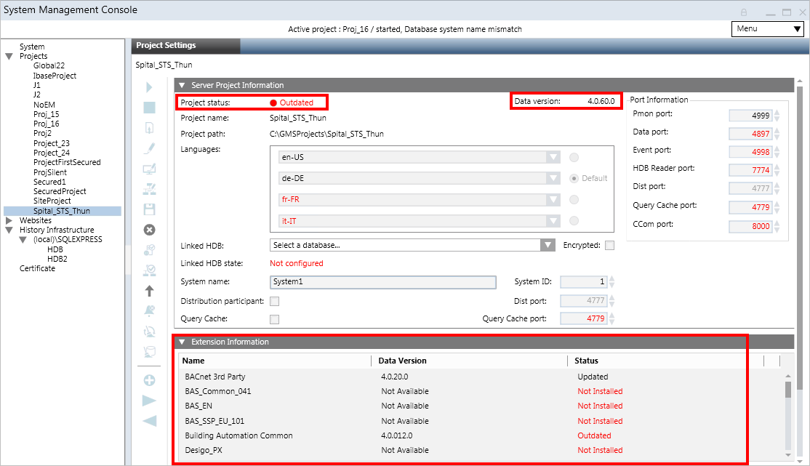
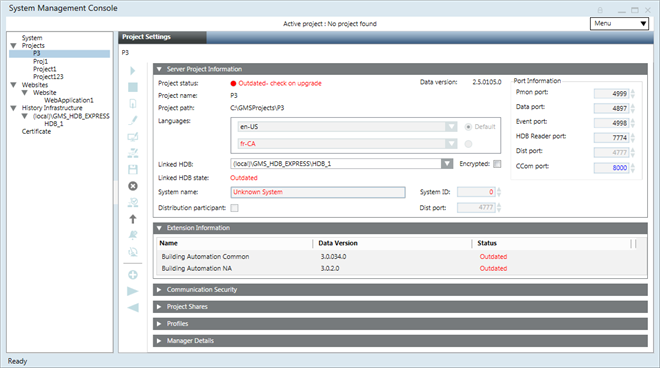
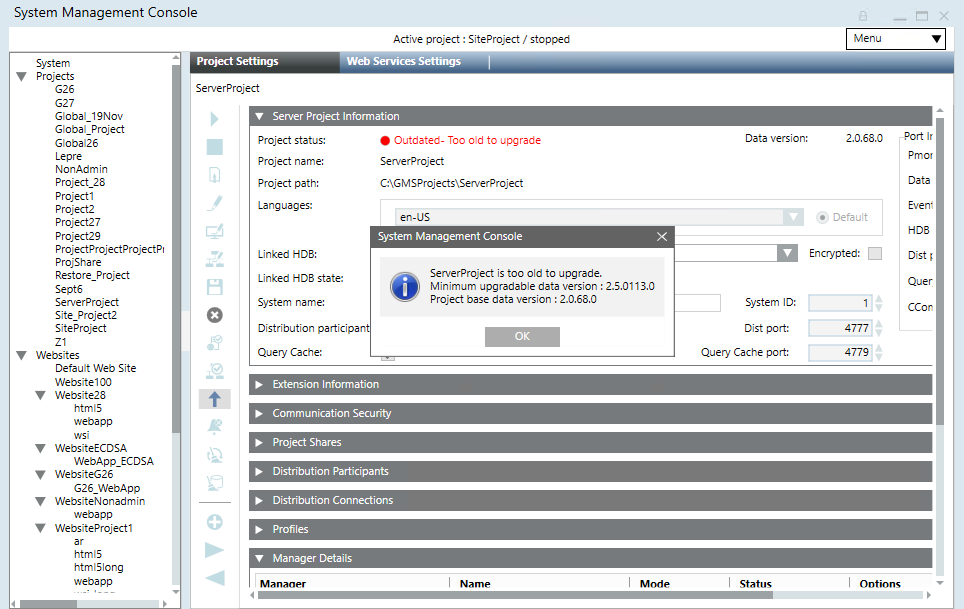

Project Restore and Upgrade Settings
Desigo CC SMC Version 7.0 supports restore and upgrade of projects backups from Version 5.0 and above. For step-by-step procedure, see Restoring a Project or Creating a Project from a Template.
Project Restore and Upgrade on Server
On Server, you can restore a project or create a project from template. For new installations, it is recommended to restore a template project instead of creating a new project. Using template projects reduces the time required for configuring new installations since template projects include pre-configured elements such as reports, schedules, graphics, user groups, macros and so on.

For details about the project templates for the current version, see Client Profiles and Event Schemas Compatibility Tables.
Tips
- Once you have restored the project template, to log into the Installed Client you need a user name and a password, which you can obtain from Technical Support.
- If you have restored the project from template, when you log on to the Installed Client using the Default Administrator as Desigo CC user, you must assign a new password. However, if you have restored a project, you can login with the same old password. In both the cases, the old root password is invalidated once the project is started and you need to set a new password using Users. In Additional User Administration Procedures, see Change a Password.
For Windows user you do not need to change the old password while logging on to the Installed Client. - In the Server Project Information expander of the Project Settings tab, you may observe the following before upgrading the project:
- Project status displays as
Outdated(in red) : Indicates that the restored project backup has an older data version than the current Desigo CC Data version.
A mandatory extension installed after the project creation makes the projectOutdated. You must upgrade such a project. Upon upgrade the mandatory extension and the parent extension (mandatory/non-mandatory) on which the mandatory extension depends, if any, both are included in the project upon upgrade.
After the selected project is successfully upgraded, the status bar displays "Project upgraded successfully" andStoppedin the Server Project Information expander.
If Server Project Information expander still displayOutdated(in red), then select corresponding main project node to refresh the project status. - System name displays as
Unknown system(in red) and System ID as0(displays in red) indicates that the restored project has an older data version than the current Desigo CC data version. The system name and system ID of the restored project are displayed on upgrade.
If machine name is changed then system name is displayed in red, and you need to update Project. Internally the pmon user and HDB user is synced, and you need to create a new certificate, import it and set as default certificate. - Languages: The language which is not installed but was configured in the project that you restored displays in red. You must install this language pack. Although such a project can run properly, it is still recommended that you install the missing language packs. For all missing languages, the localization files cannot be imported during Add to Project and Upgrade Project workflows. In this case, a warning trace is added to the Smc.log file located at
[installation drive:]\[installation folder]\GMSMainProject\log
For example,Warning,[Installation Drive]:\[Installation folder]\GMSMainProject\libraries\Exports\fr-CA folder not found. Localization will not be imported for fr-CA language. - Linked HDB state: System name in the HDB does not match system name of the project (displays in red). You must correct the selected HDB’s system name by clicking Edit
 and Save
and Save  .
. - In the Extension Information expander, the extension status can be outdated or not installed (displays in red) or updated.
- During upgrade, the database consistency is checked and is repaired internally. However, if the database is beyond repair, the upgrade fails and you cannot work with the project.
- Not all outdated projects are upgradable. If the version of the backup is too old to upgrade, the Project status after restore displays
Outdated - Too old to upgrade. When you upgrade such a project, a message informs you accordingly. Currently the default Minimum Upgradable Version is 3.0. - On project upgrade all, the Global libraries are imported and are available.
- If you have any discipline-specific libraries in your project backup, as part of the extension, you must add the extension module to the project by clicking Add to Project
 .
.
For example, if you have HVAC or Air libraries in your project backup that you restored, you must add the respective extension to the project (in this case BAS_common). Adding an extension to the project automatically upgrades the HVAC/Air libraries. - Extensions are upgraded during the project upgrade process.
- Extension upgrade is applicable only to those extensions that are installed and, that are part of the restored project which you are about to upgrade, and whose status in the Extension Information expander is indicated as
Outdated. However, if a new extension is added as a dependent extension of the already existing extension of a project, then during the project upgrade it is internally added to the project and gets upgraded along with the project upgrade. Similarly, if an existing extension is to be carved out into a new extension, then during upgrade the carved out extension is added to the project internally and gets upgraded along with the project upgrade. - If a project backup contains an extension that is not currently installed, the extension Status in the Extension Information expander displays as
Not Installed.You can still upgrade such a project, however, the extension is not upgraded. - If an extension is discontinued in the setup of a later version, but the project backup you are about to restore contains this extension, you can still upgrade the project. However, the extension that was marked for discontinuation is not upgraded with the project and therefore does not display in the Extension Information expander after the project is upgraded.
- Once the project upgrade is complete, the related logs are generated at location ...GmsMainProject/Log/Upgrade/[ProjectName_log].


Project Restore and Upgrade on Client/FEP
On Client/FEP, in SMC, you can upgrade an existing Client/FEP project displaying the Project status field as Outdated (in red). See Upgrade a Client/FEP Project.
For Version 7.0, the minimum upgradable version for Client/FEP project backup is Version 5.0.